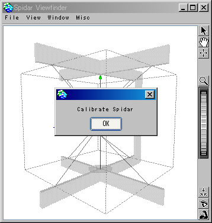

以下の手順で、SPIDAR-G、HDHC、ホストコンピュータを接続してください。
- HDHC と SPIDAR-G を接続する
エンコーダ入力端子とモータ出力端子を接続します。
それぞれ８本ありますので、番号を間違えないように注意してください。 - HDHC の主電源、モータ出力スイッチがオフであることを確認する
主電源は HDHC の後側（電源やUSB2.0の差込口がある側）にあります。
モータ出力スイッチは HDHC の前側（エンコーダ入力端子とモータ出力端子の差込口がある側）にあります。 - HDHC の専用電源アダプター（5V 電源 + 24V 電源）をコンセントに接続する
必ず事前に HDHC の電源がオフになっていることを確認して、プラグをコンセントに差してください。
- ホストコンピュータを起動する
通常通り、起動してください。
USB2.0 ケーブルが差さったままだと起動しない場合がありますので、SPIDAR-G 関連のものが接続されていない状態で起動してください。 - HDHCのUSB2.0ケーブルを、USBハブなどを介さず、直接ホストコンピュータと接続する。
処理速度が遅くならないよう、必ず直接接続してください。
- HDHC の主電源をオンにする
HDHC の後側（電源やUSB2.0の差込口がある側）のスイッチです。
- デバイスドライバが認識されることを確認する
「マイコンピュータ -> 右クリックメニュー -> 管理」を選ぶと、 「コンピュータの管理」のウィンドウが開きます。
ウィンドウ内で、 「コンピュータの管理（ローカル） -> システム ツール -> デバイスマネージャ」 を選択します。
右側に表示されるビュー内で、 「$(マシン名) -> USB (Universal Serial Bus) コントローラ」を一覧させます。
「SPIDAR SH4」と書かれているものが正常に表示されていれば、OK です。
- HDHC のモータ出力スイッチをオンにする
SPIDAR-G に力が出せる状態になります。
- HaptiChem システムを起動する
起動後、ランチャーからアプリケーションを起動すると、HDHC に情報が送信されます。
SPIDAR-G の糸が最低張力で引っ張られます。キャリブレーションも自動的に行われます。
グリップを中心に持って行って、OKボタンを押してください。
これで SPIDAR-G を利用してアプリケーションを操作できます。